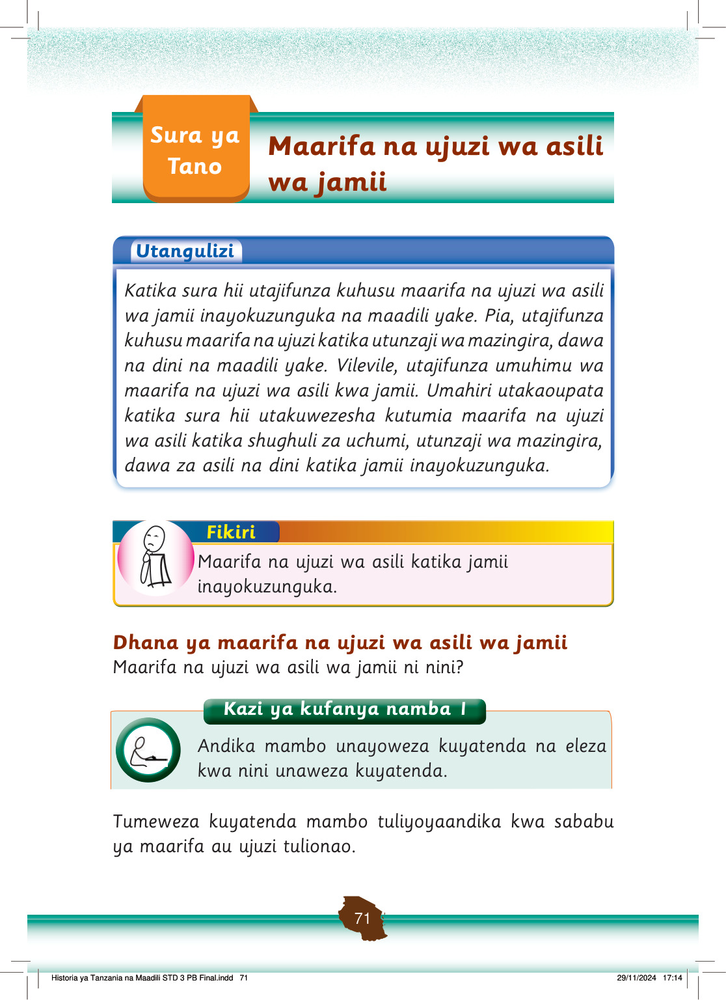

Sura ya Tano
Maarifa na ujuzi wa asili wa jamii
Utangulizi
Katika sura hii utajifunza kuhusu maarifa na ujuzi wa asili wa jamii inayokuzunguka na maadili yake.
Pia, utajifunza kuhusu maarifa na ujuzi katika utunzaji wa mazingira, dawa na dini na maadili yake.
Vilevile, utajifunza umuhimu wa maarifa na ujuzi wa asili kwa jamii.
Umahiri utakaoupata katika sura hii utakuwezesha kutumia maarifa na ujuzi wa asili katika shughuli za uchumi, utunzaji wa mazingira, dawa za asili na dini katika jamii inayokuzunguka.
Fikiri
Maarifa na ujuzi wa asili katika jamii inayokuzunguka.
Dhana ya maarifa na ujuzi wa asili wa jamii
Maarifa na ujuzi wa asili wa jamii ni nini?
Tumeweza kuyatenda mambo tuliyoyaandika kwa sababu ya maarifa au ujuzi tulionao.
Kazi ya kufanya namba 1
Andika mambo unayoweza kuyatenda na eleza kwa nini unaweza kuyatenda.